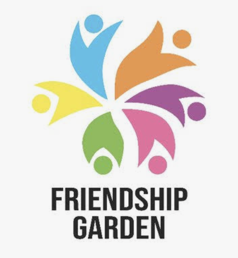
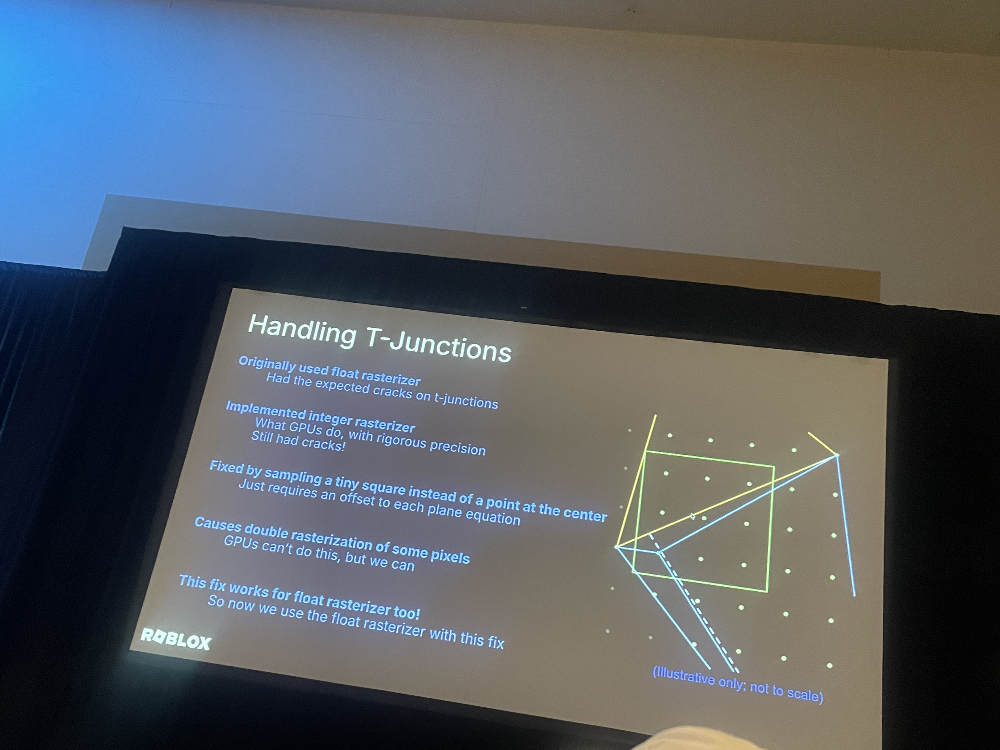
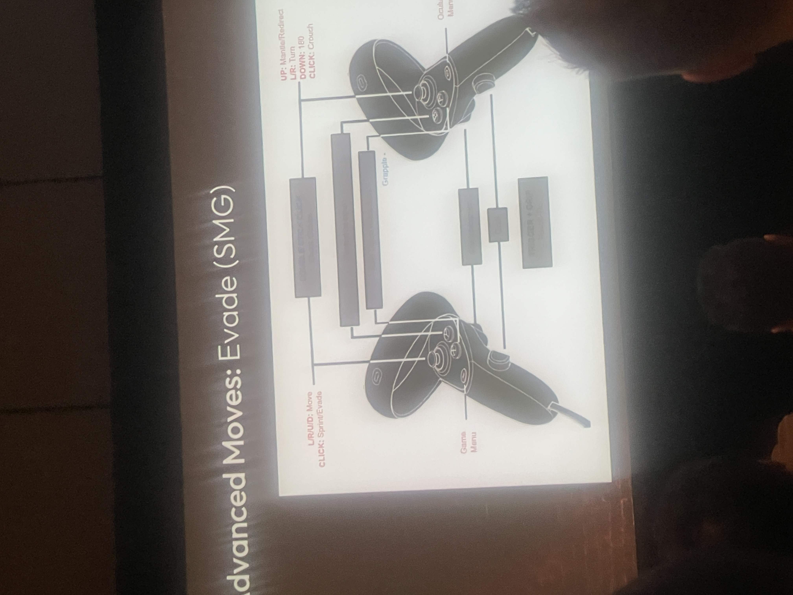
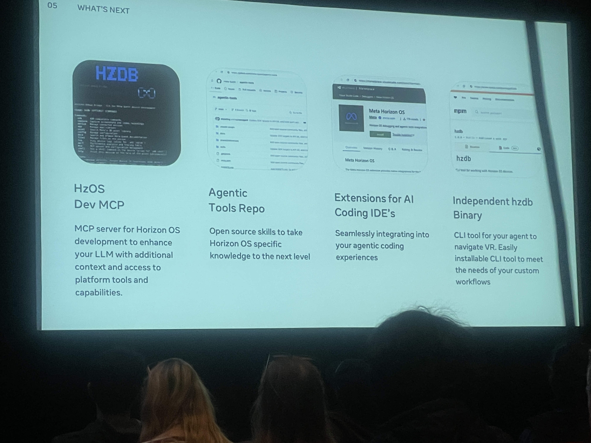
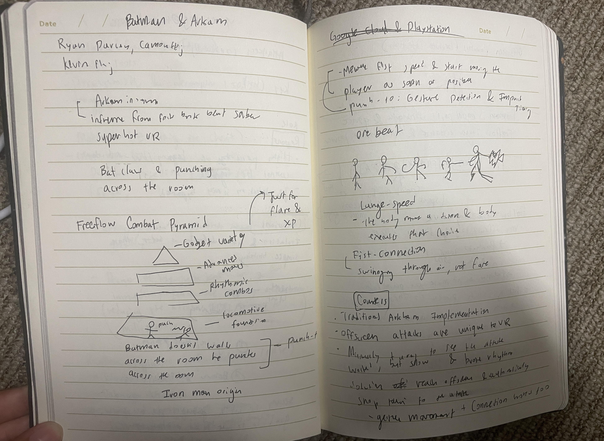
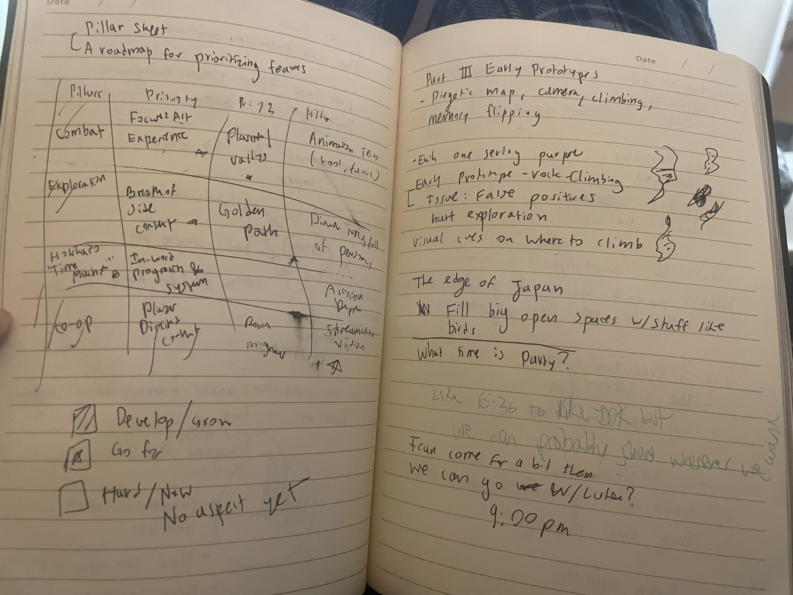
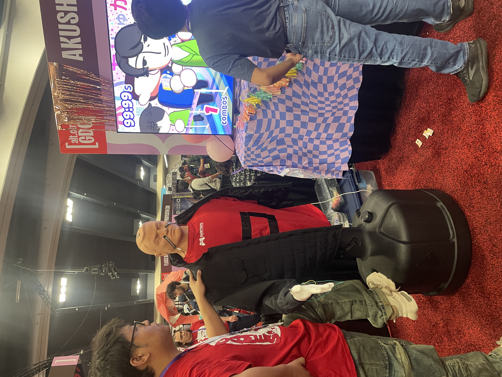

Game Developers Conference 2026

Friendship Garden GDC Scholar
Game Development | Graphics | Game Design | VR | Alternative Controllers
I received the Friendship Garden Game Developers GDC Scholarship, which made it possible for me to attend the Game Developers Conference 2026 for the first time.
As a student exploring game development and interactive systems, GDC gave me the opportunity to attend industry talks, meet developers, and learn about emerging technologies shaping games.
- Conference: Game Developers Conference 2026
- Scholarship: Friendship Garden Game Developers
- Focus Areas: Game Development, Graphics, Game Design, VR & Alternative Controllers
GDC 2026 Experience
A major theme I saw at GDC was how player and user experiences are shaped, which strongly connected to my own work building games involving hardware-integrated projects.
I was especially interested in behind-the-scenes discussions on game design, including the development of Ghost of Yōtei and Batman: Arkham Shadow in VR. Hearing developers break down how gameplay systems, visual technology, level design, and player interaction evolved throughout production gave me a deeper understanding of how large game teams turn ideas into finished experiences.
GDC gave me the opportunity to learn directly from developers across graphics, engineering, game design, and VR while seeing how different disciplines come together to shape the final player experience.
GDC Talks
Graphics in Roblox Talk

Graphics in Roblox Talk

Gotham VR

Gotham VR

Gotham VR Notes

Ghost of Yōtei Notes

Alternative Controllers
One of my favorite parts of GDC was seeing experimental approaches to player interaction through alternative controllers. These projects explored how physical interfaces and unconventional input methods can create entirely different gameplay experiences.
ALT CTRL 1

ALT CTRL 2

ALT CTRL 3

ALT CTRL 4
ALT CTRL 5
Conference Highlights
- Graphics & Rendering: Attended technical talks exploring graphics and rendering techniques used in games such as Roblox.
- Game Design: Learned about the design and development processes behind games including Ghost of Yōtei.
- VR Development: Attended discussions about designing immersive interactions and gameplay for Batman: Arkham Shadow.
- Alternative Controllers: Explored experimental physical interfaces and unconventional approaches to player interaction.
- Industry Community: Connected with developers, students, and other scholars from across the games industry.
Reflection
Beyond the sessions, being part of a community of developers and scholars made the experience especially meaningful.
The scholarship did not just give me access to GDC; it made me feel supported as an emerging developer and motivated me to continue building and contributing to the future of interactive media.
Thank you to Friendship Garden Game Developers for making this opportunity possible.
GDC 2026 LinkedIn Reflection
I also shared a reflection and photos from my GDC experience on LinkedIn.